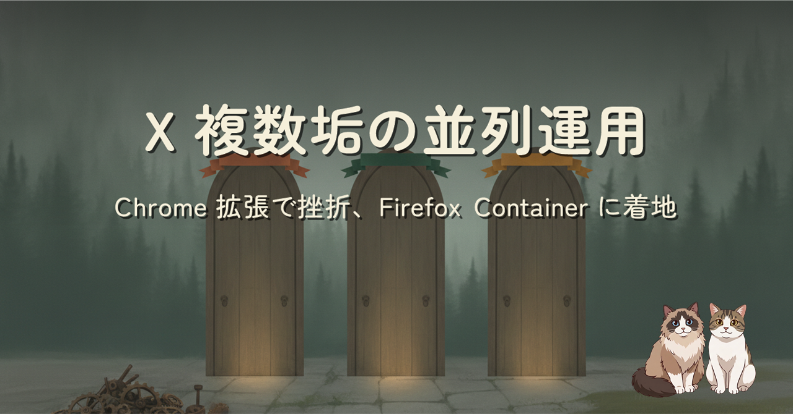
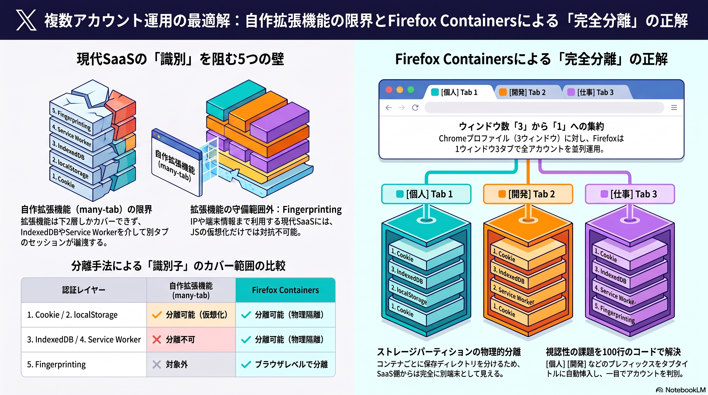

X で複数アカウントを持っていて、1 ウィンドウの中で行き来したい。Chrome のプロファイル切替は 3 ウィンドウ立ち上がって重い。そこでタブ単位で Cookie と localStorage を分離する拡張 many-tab を自作したが、X には届かなかった。現代 SaaS の identity は Cookie と localStorage の上に IndexedDB / Service Worker / fingerprinting が積まれていて、拡張の守備範囲では超えられない。最終的に Firefox の Multi-Account Containers に落ち着いた紆余曲折の記録です。
「1 ウィンドウで複数アカウントを切り替えたい」というよくある要求に対して、Chrome プロファイルではウィンドウが増えて回らない、自作拡張では上位の状態管理層に届かない、と 2 回負けた後、Firefox の Multi-Account Containers という「ブラウザレベル分離」に落ち着いた話。「Cookie を分離した = 別 identity」は 10 年前の話で、現代 SaaS の identity は 5 層の積み重ねで決まる、という設計上の教訓が中心です。
